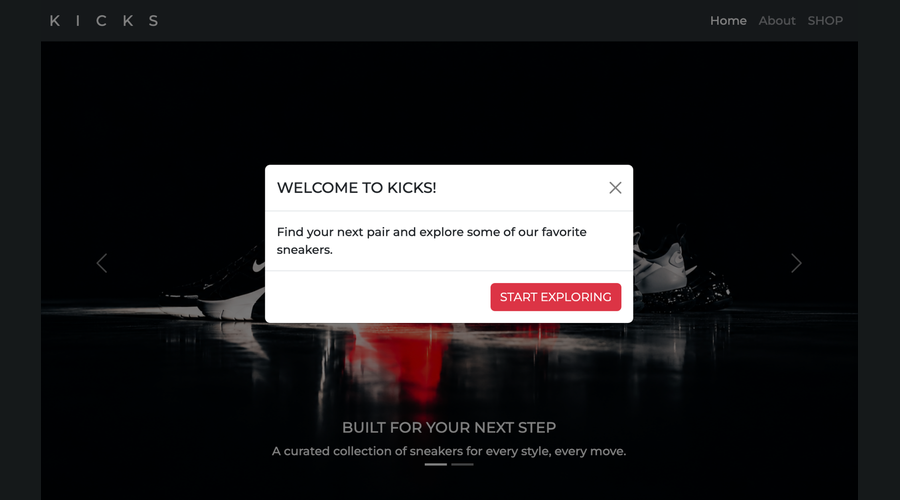

KICKS
KICKS is a sneaker website I created using HTML, CSS, and Bootstrap. It includes a home page with an image carousel and an about page. I focused on organizing the pages and creating a consistent style.
Tools Used:
HTML, CSS, Bootstrap, and Git/GitHub
What I Learned:
I learned how to connect pages, customize Bootstrap components, and adjust fonts, spacing, and images with CSS. I also practiced using the Git command line to commit and push updates.
View My KICKS website